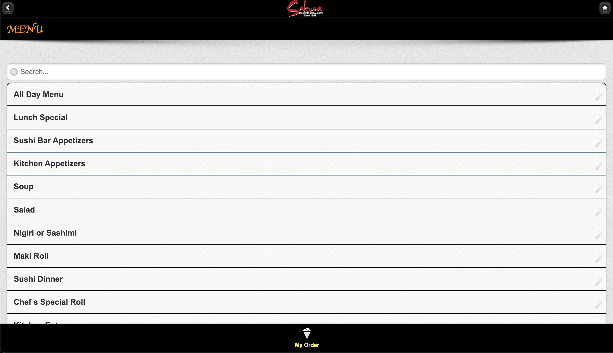
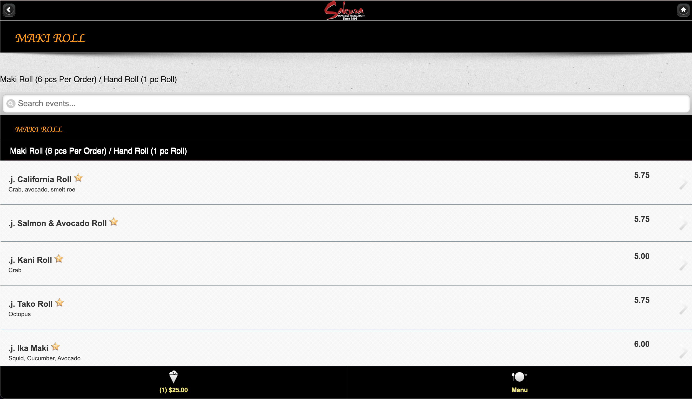
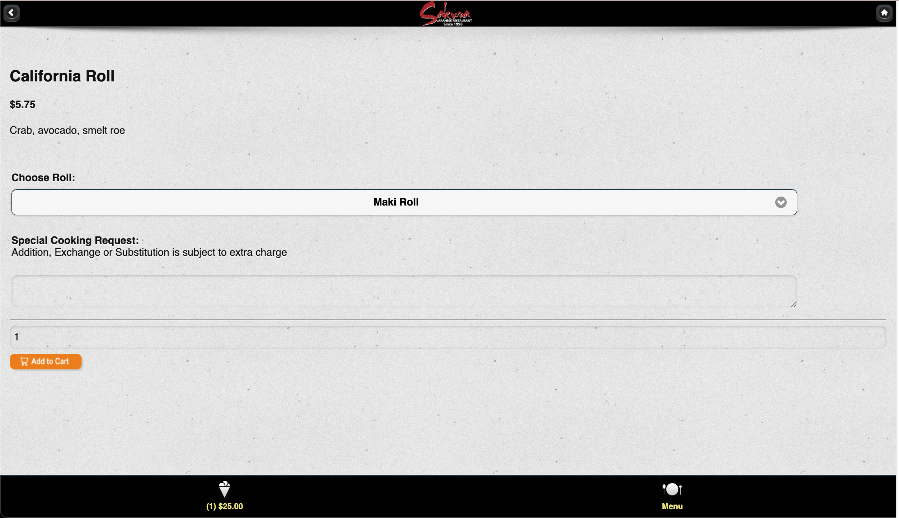

USABILITY ISSUES



- USABILITY
- The user must navigate back and forth between category pages and menu item pages when deciding what they want
- The cart was hard to find at first because it is in a more non-conventional area of the screen
- It is unclear what the slanted bars on the side of each row mean, and they do not indicate that the rows/options are clickable.
- The font is all black and white, thus everything feels of equal importance
- EFFICIENCY
- The task of ordering frequently would not be done very easily, as you would still have to scroll through each item in the menu/category, and remember the name of the dish you ordered. Pictures would be helpful, or perhaps a “recently ordered”.
- When updating your cart, the user must remember to press “update quantity” everytime they want to change the number of that menu item to order.
- There are two “checkout” buttons which may lead to confusion.
- LEARNABILITY
- I think the site is pretty easy to learn, as you can see the different categories on the menu home page. However the user must first get accustomed to navigating between the different category and menu item pages.
- However, there may be some hesitation before realizing the functionality of the buttons at the bottom, since they are not there initially when you first start your order / your cart is empty.
- The hierarchy of the categories can be confusing, since I’m not sure where to click first in order to get the best / most recommended food items.
- MEMORABILITY
- While there are no particulary special maneuvers to order from the menu, it can get confusing / overwhelming with all the different pages, and you might not remember what you ordered when ordering the next time.
- CONCEPTUAL MODEL
- I believe the conceptual model of this webpage is to be able to view each menu item, order, and write notes to customize that order. The user can also view the different prices for different sizes of food and pick different options if applicable.